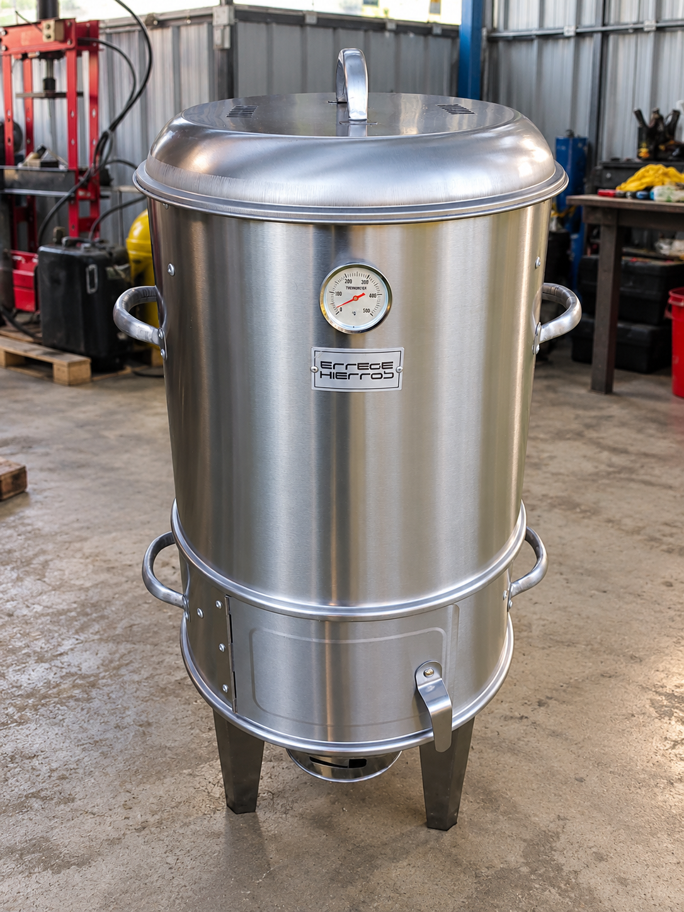

Semana 2 · Empresa solicitante: Kovati EIRL · Desarrollo de un prototipo académico.
La propuesta se convirtió en el proyecto elegido
En la semana 1 se propuso trabajar en una mejora para el proceso de curado del barniz aislante de bobinados. Durante la semana 2 se eligió y aprobó el proyecto para continuar con su desarrollo. Esta decisión dio una dirección concreta al trabajo del semestre: estudiar una necesidad de Kovati EIRL y plantear un prototipo que permitiera evaluar su automatización.
El proyecto que hoy identificamos como KOVAX parte de una situación existente: el curado se realiza en un horno a gas cuya regulación depende de la intervención del operador. La elección se sustentó en la relación entre esa necesidad y los conocimientos de instrumentación, control, programación y supervisión de nuestra carrera.
Lluvia de ideas y planteamiento inicial.
Definición del problema y orientación del proyecto.
Requisitos, diseño, implementación y pruebas.
El propósito de esta página es dejar documentados los motivos de la elección, la empresa que requiere la mejora, el funcionamiento del proceso actual y el alcance de la propuesta aprobada.
Una necesidad del mantenimiento de motores eléctricos
El informe del proyecto identifica a Kovati EIRL como la empresa vinculada con la necesidad. El proceso considerado forma parte de las actividades de mantenimiento y rebobinado de motores eléctricos: después de aplicar barniz aislante a los bobinados, se realiza un tratamiento térmico cuyas condiciones deben corresponder al producto utilizado.
Kovati EIRL
- Actividad relacionada
- Mantenimiento y rebobinado de motores eléctricos.
- Proceso estudiado
- Curado del barniz aislante aplicado a los bobinados.
- Situación descrita
- Horno a gas con regulación manual de temperatura y supervisión del tiempo por el operador.
- Necesidad principal
- Mantener y verificar las condiciones de temperatura y tiempo, y facilitar la supervisión del ciclo.

La necesidad consiste en lograr condiciones de operación más repetibles entre lotes, reducir la dependencia de ajustes manuales continuos y disponer de información visible sobre la temperatura, el tiempo y el estado del proceso. Estas condiciones son la base para definir qué debe cumplir el prototipo.
Fuente: informe del proyecto, «Identificación de la necesidad» y «Análisis de la situación actual».
Cómo funciona actualmente el proceso
El proceso descrito en el informe se desarrolla por lotes. Los bobinados impregnados se cargan en el horno; el operador inicia el calentamiento, consulta el indicador térmico y ajusta manualmente el suministro de gas. También supervisa el tiempo de permanencia. Al terminar el tratamiento, interrumpe el calentamiento y permite el enfriamiento antes de la descarga e inspección.
- CargaIngreso de los bobinados impregnados con barniz.
- Calentamiento y curadoRegulación manual del gas y supervisión de temperatura y tiempo.
- EnfriamientoDescenso de temperatura al finalizar el calentamiento.
- Descarga e inspecciónRetiro de los bobinados tratados para continuar con el mantenimiento.
PFD-01 · Proceso actual de curado
El PFD —diagrama de flujo del proceso— permite reconocer los flujos principales y la participación del operador. La imagen siguiente corresponde al horno a gas con regulación manual y se incorpora desde el informe LaTeX como apoyo para explicar la situación de partida.

Equipo en el que se realiza el calentamiento de los bobinados.
Elemento que ajusta el operador para modificar el suministro de gas.
Lectura que el operador consulta durante el tratamiento.
Interviene en la regulación térmica y en el seguimiento del tiempo.
La relación central del PFD es la observación del indicador y el ajuste manual de la válvula. Las flechas de los bobinados representan la secuencia de un tratamiento por lotes. La temperatura y la duración deberán definirse a partir de las especificaciones del barniz utilizado.
Por qué este proceso motivó el proyecto
La regulación depende de la experiencia y de la oportunidad de intervención del personal. Cuando el operador debe atender otras actividades, mantener y verificar condiciones equivalentes entre ciclos resulta más difícil. El informe identifica posibles desviaciones térmicas, dificultades para supervisar el tiempo efectivo del tratamiento y una demanda de atención constante.
| Situación descrita | Efecto posible | Necesidad para el proyecto |
|---|---|---|
| Ajuste manual del gas | Variaciones en las condiciones térmicas entre ciclos. | Regular la temperatura y comprobar la respuesta del sistema. |
| Tiempo supervisado por el operador | Dificultad para seguir de forma consistente la duración del tratamiento. | Configurar y supervisar el tiempo según el ciclo definido. |
| Atención continua al indicador | Mayor dedicación del personal a la vigilancia del horno. | Mostrar de forma clara las variables, los estados y las alarmas. |
| Información limitada del proceso | Dificultad para comparar resultados entre lotes. | Preparar registros y criterios de prueba que permitan evaluar la propuesta. |
PREGUNTA QUE ORIENTA EL PROYECTO¿Cómo regular y supervisar automáticamente la temperatura y el tiempo de un prototipo de horno eléctrico para mantener las condiciones requeridas por el proceso de curado y reducir la dependencia de ajustes manuales?
Los efectos sobre calidad, retrabajos, consumo y costos se plantean como aspectos a investigar. Su magnitud requerirá registros del proceso actual y pruebas comparables del prototipo.
Qué proyecto se eligió desarrollar
Se eligió desarrollar un prototipo de horno eléctrico con regulación automática de temperatura y supervisión del ciclo, orientado al curado del barniz aislante en bobinados de motores eléctricos. El objetivo es disponer de una plataforma académica para diseñar, integrar y evaluar una solución de automatización vinculada con la necesidad de la empresa.
Diseñar e implementar un prototipo que permita regular la temperatura, supervisar el tiempo de tratamiento y visualizar el estado del proceso, incorporando las funciones de protección que se definan durante la ingeniería.
El informe desarrolla posteriormente la solución mediante PLC Siemens S7-1200 con control PID, medición con PT100 y transmisor de 4–20 mA, regulación de potencia por SSR, interfaz HMI y ventiladores. En esta semana, la elección y aprobación fijan el propósito y la orientación del trabajo; la selección y justificación de los componentes se documentarán en las etapas siguientes.
- Temperatura: medir la variable y regular el calentamiento respecto a una consigna.
- Tiempo: configurar y seguir la duración del ciclo conforme a las condiciones del barniz.
- Supervisión: facilitar la consulta de variables, estados y alarmas.
- Verificación: preparar pruebas para evaluar el funcionamiento y las protecciones del prototipo.
La propuesta mantiene la carga, descarga e inspección de los bobinados a cargo del operador. El desarrollo contempla la automatización de la regulación y la supervisión del tratamiento térmico.
Por qué la elección tiene sentido
Integrar medición y control
El proceso permite aplicar instrumentación, programación, regulación térmica y supervisión a una necesidad concreta.
Facilitar el seguimiento del ciclo
Se busca reducir los ajustes manuales continuos y disponer de información clara durante la operación.
Desarrollar un prototipo evaluable
La propuesta reúne diseño, montaje, automatización, documentación y pruebas dentro del proyecto del semestre.
Estudiar la viabilidad
El prototipo permitirá estimar costos y reunir datos antes de considerar una aplicación de mayor escala.
Alcance acordado para continuar
El proyecto comprende el desarrollo de un equipo experimental y su documentación: requisitos, diseño mecánico y eléctrico, instrumentación, control, montaje, programación y pruebas. El alcance del informe se limita a la construcción y evaluación del prototipo como base para una futura aplicación industrial.
Las condiciones de curado deben corresponder al barniz seleccionado y a la capacidad del equipo. La validación requerirá revisar sus especificaciones, las condiciones de ventilación y las protecciones, además de verificar la respuesta térmica y la temperatura de la carga. Estos aspectos se desarrollan en la ingeniería y en la revisión de riesgos de la semana 9.
La aprobación de la propuesta permite continuar con el desarrollo académico. La instalación industrial, la validación del curado y las autorizaciones de ensayo tienen sus propios requisitos de evaluación.
Una decisión que ordena el trabajo del semestre
El hito de la semana 2 fue la elección y aprobación del proyecto. La necesidad quedó vinculada con Kovati EIRL y con un proceso específico: el curado del barniz aislante en bobinados mediante un horno cuya regulación es manual.
El análisis del proceso actual permite entender dónde interviene el operador y qué funciones interesa mejorar. El PFD aporta una representación común para comunicar esa situación y preparar la definición de requisitos.
La conclusión de esta etapa es avanzar con un prototipo de horno eléctrico automatizado cuyo desempeño pueda evaluarse con criterios y pruebas documentadas. El siguiente trabajo será precisar las funciones, el concepto de solución y las condiciones que debe cumplir el sistema.
Continuar con la semana 3: funciones y concepto de solución →Imágenes y fuentes del informe

Base documental de esta página
La necesidad, el problema, la justificación y el alcance se basan en el informe LaTeX del proyecto, apartados «Generalidades» y «Análisis del proceso y requerimientos».
- «Identificación de la necesidad» y «Justificación del proyecto».
- «Descripción general del proyecto», «Objetivos», «Alcance» y «Limitaciones y restricciones».
- «Descripción del proceso actual» y «Diagrama de flujo del proceso (PFD) actual».
La elección y aprobación en la semana 2 se registran conforme al avance confirmado por el equipo. Las imágenes proceden del informe consolidado compartido y se incorporan como material de apoyo para explicar el proceso actual.